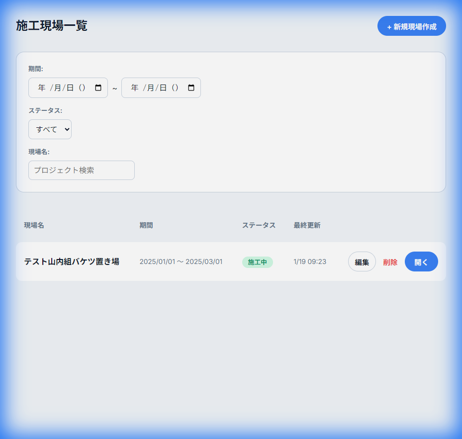
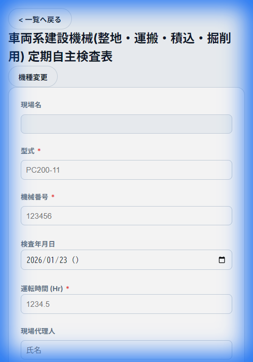

株式会社山内組 点検表
STEP 1 (推奨)
QRコードを読み取る
機械に貼り付けられている「QRコード」をスマホのカメラで読み取ります。
- 「月次点検」または「日常点検」のQRコードを読み取ると、自動的に該当する点検画面が開きます。
- この場合、STEP 2 (現場選択) や STEP 3 (機械選択) をスキップできます。
STEP 2 (手動の場合)
現場を選択する
QRコードがない場合は、施工現場一覧画面から担当する現場を選択します。

- 現場名の一覧が表示されます。
- 自分が担当する現場名をタップしてください。
- 現場が見つからない場合は、上部の検索バーで検索できます。
STEP 3 (手動の場合)
機械を選択する
点検を行う機械の種類を選択します。
- 一覧から、点検する重機や設備を選択してください。
- ショベル等の場合は、「月次点検」と「日常点検」のボタンが表示されますので、適切な方を選んでください。
- 「+ 点検表の新規登録」ボタンから新しい機械を追加することも可能です。
STEP 3
点検結果を入力する
点検表の各項目をチェックしていきます。

- 「型式」「機械番号」「運転時間」を必ず入力してください。
- 各点検項目の状態（レ、A、△、X）をタップして切り替えます。
- 初期状態は「レ（良好）」になっています。
- 問題がある場合は、タップして「△（修理）」などに変更してください。
STEP 4
保存と完了
入力が終わったら、データを保存します。
- 画面最下部の「保存」ボタンをタップすると、点検結果が登録されます。
- 修正が必要な場合は、再度現場一覧から該当の機械を選んで編集できます。
ご不明な点がある場合は、管理者にお問い合わせください。